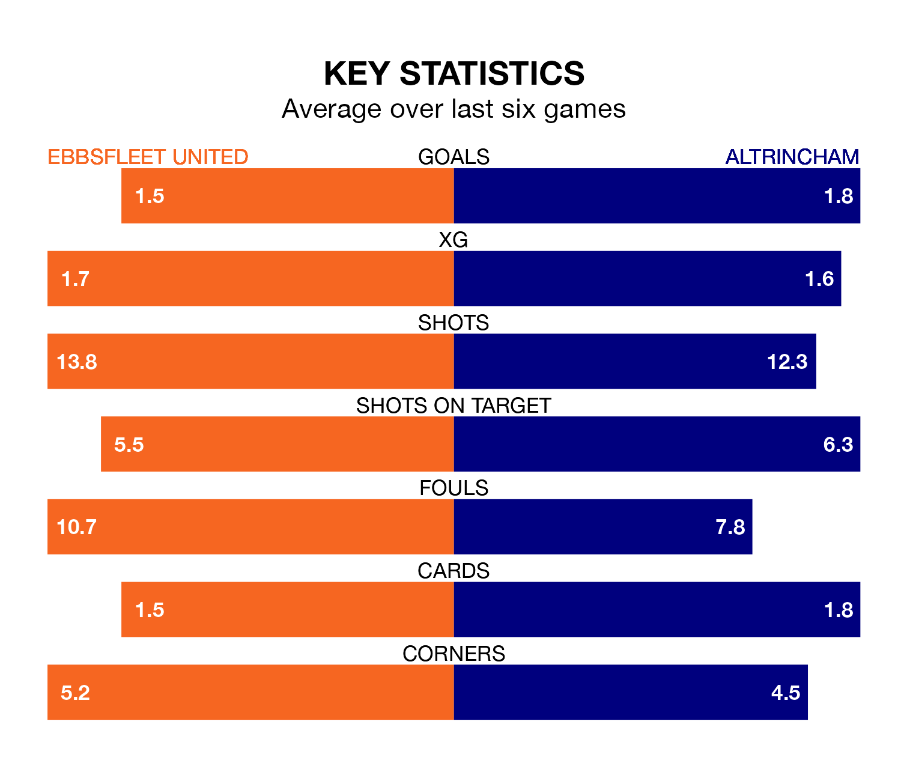

Ebbsfleet United host Altrincham on Saturday at the Kuflink Stadium in the National League.
In their last league match, on Tuesday, Ebbsfleet lost to Solihull Moors 3-0 away.
Altrincham drew, 0-0 away at Dorking Wanderers on April 6.
With 81 goals in 44 games so far this season, Altrincham are scoring more than average in the league with 1.8 goals per game. And they are conceding fewer than average, letting in 59 goals at a rate of 1.3 per game.
Ebbsfleet, meanwhile, are below average scorers, with 1.4 goals per game, compared to a league average of 1.5. They have conceded 1.7 goals per game.
Robins are sixth in the table after 44 games, of which they have won 20 and drawn 11, earning 71 points.
United are 12 places behind the away team in 18th, with 14 wins and 10 draws putting them on 52 points.
The hosts are in mixed form in the National League, with two wins and two draws from their last six games.
With four wins and a draw over that period, Altrincham's form is better – they have taken 13 points from 18, compared to Ebbsfleet's eight.
Updated: 10:01 (UTC), 12/04/24